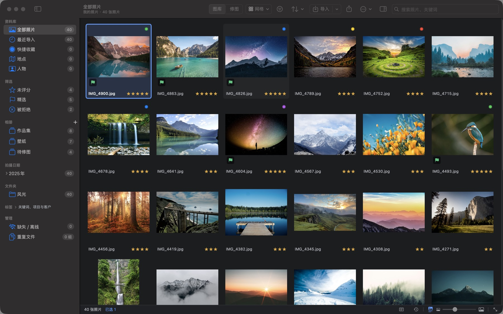
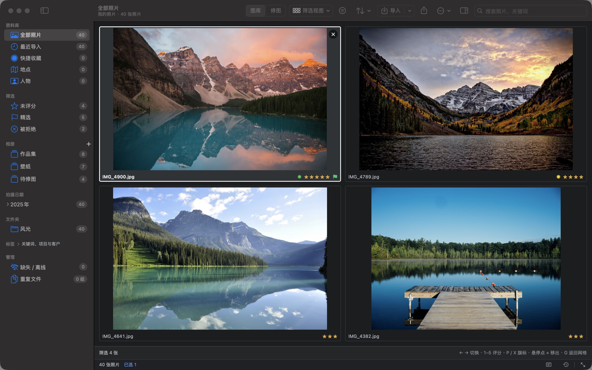
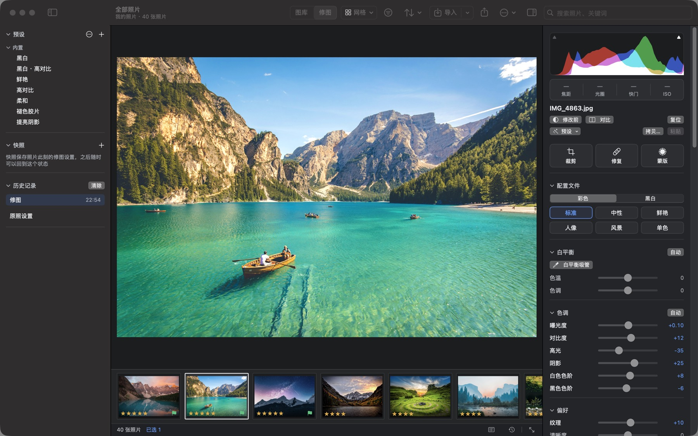
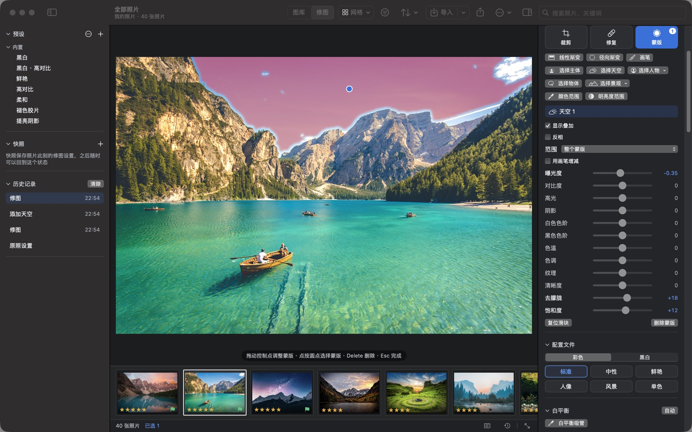
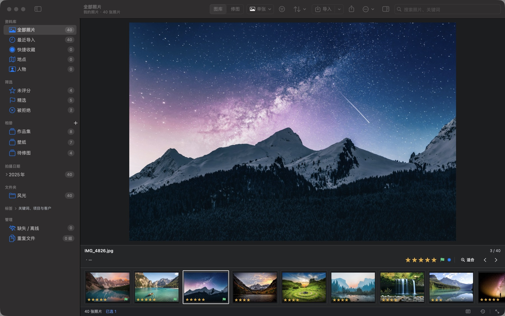
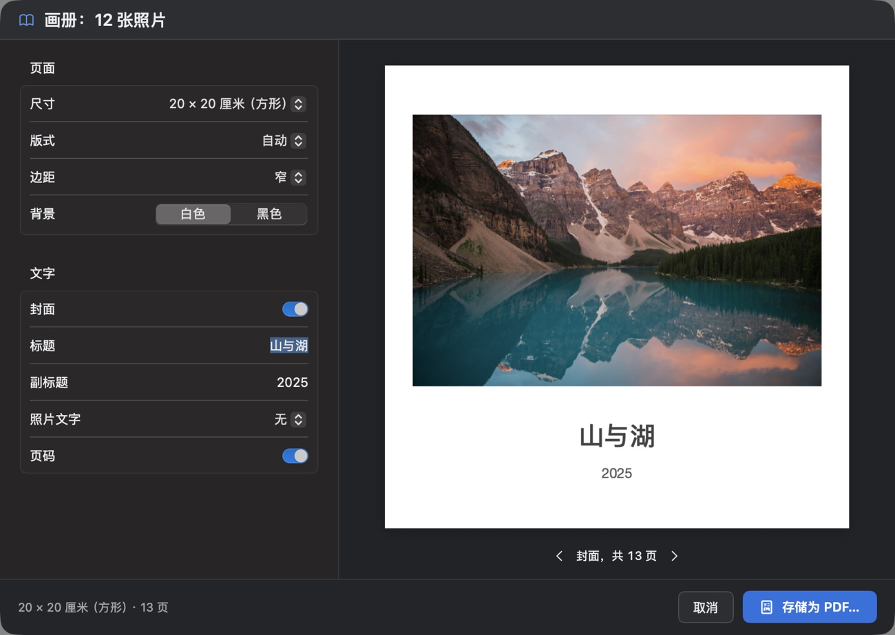

照片管理与 RAW 修图，
都在你的 Mac 上。
PhotoCatalog 是一款免费开源的 macOS 照片管理与 RAW 修图应用，用法接近 Lightroom Classic：导入、选片、整理、非破坏性修图，再到导出、打印和画册。照片不离开你的 Mac，原片从不改动。

选片
快速选片，留下最好的那张
- 网格、单张、比较和筛选视图，把连拍并排对比
- 数字键评分，P / X 标记精选或拒绝，并自动跳到下一张
- RAW+JPEG 合并成一张显示，按拍摄时间自动叠放连拍
- 智能相册、相册集和快捷收藏，随时找到要用的照片

修图
非破坏性的 RAW 修图
以 macOS 的 RAW 引擎为基础：配置文件与黑白、色调曲线、混色器、颜色分级、LUT、细节与镜头校正、镜头模糊、透视校正和软打样。每一步都记入历史，可以随时回到任何一步；预设能与 Lightroom 互通。

AI 蒙版
一键选中天空、主体或人物
主体、天空、人物、物体和景观蒙版由 App 内置的模型在本机算出，此外还有渐变、画笔以及颜色和明亮度范围。AI 移除、降噪和超分辨率同样在本机完成。

整理
整理照片，随时找回
- 关键词、相册与智能相册，按日期、相机、镜头筛选
- 本机人脸识别，在 LFW 基准上准确率 99.4%
- 地图视图与 GPX 轨迹匹配位置
- 找出完全相同和相似的照片
- 评分、关键词和标题写入 XMP，Lightroom 与 Bridge 都能读取

输出
从导出到画册
导出时可以用预设、输出锐化和水印；打印支持打印机色彩配置文件；幻灯片能导出成 MP4 视频；网页画廊和 PDF 画册一步生成，对话框里逐页预览。

导入
文件夹、存储卡、相机与 iPhone、视频和联机拍摄。导入中断了，下次打开会接着完成。
合并与增强
HDR 与全景合并，AI 降噪，以及把宽高各放大一倍的超分辨率。
AI 助手（可选）
生成标题、说明和关键词，用一句话查找照片，用文字描述想要的效果来修图。可用 Anthropic、兼容 OpenAI 的服务，或本机的 Ollama / LM Studio。
安心可靠
每次编辑都能撤销；目录库快照，以及经过校验、可恢复成新目录库的完整备份。
为大型图库而生
50 万张照片的目录库，打开后约 5 秒即可使用；筛选、排序和搜索在 0.1–0.35 秒内完成。
中文与英文
界面提供简体中文和英文，跟随系统语言，也可以在设置中切换。
常见问题
PhotoCatalog 是免费的吗？
是。PhotoCatalog 免费开源，以 GPL-3.0 许可发布；不需要账户，没有订阅，也没有内购。即将上架的 Mac App Store 版同样免费。
支持哪些 Mac？
搭载 Apple 芯片（M 系列）、运行 macOS 14 Sonoma 或更高版本的 Mac。不支持 Intel 芯片的 Mac。
我的照片会被上传吗？
不会。目录库、预览和修图记录都在你的 Mac 上，人脸识别、AI 蒙版和降噪也在本机运行。只有使用可选的 AI 助手、查看地图或检查更新时才会联网，详见隐私政策。
能和 Lightroom 一起用吗？
不能直接打开 Lightroom 目录库（.lrcat），但会读写 Lightroom 和 Bridge 都能识别的 XMP 附属文件（评分、颜色标签、关键词、标题、说明和位置），修图预设也能以 .xmp 文件导入和导出。
支持哪些 RAW 格式？
佳能（CR2、CR3）、尼康（NEF）、索尼（ARW）、富士（RAF）、奥林巴斯 / OM System（ORF）、松下（RW2）、宾得（PEF）、三星（SRW）和 DNG。RAW 由 macOS 自带的 RAW 引擎解码，所以某款相机能否打开取决于 macOS 是否支持它。另外支持 JPEG、HEIC、PNG、TIFF、GIF、WebP、BMP，以及 MOV、MP4、M4V 视频。
会改动原始照片吗？
不会。修图只记录在目录库里，导出时生成新文件。评分、关键词等元数据可以写入原片旁边的 XMP 附属文件，原片本身保持不变。
隐私
你的照片只属于你
没有账户、统计或追踪，也不会主动上传你的照片库。只有在你使用 AI 助手、查看地图或检查更新时才会联网；选择本机的 AI 服务，照片就完全不离开你的 Mac。
免费下载 PhotoCatalog
- macOS 14 或更高版本，Apple 芯片（M 系列）
- 经过 Apple 公证，可在 App 内一键更新
- 即将登陆 Mac App Store